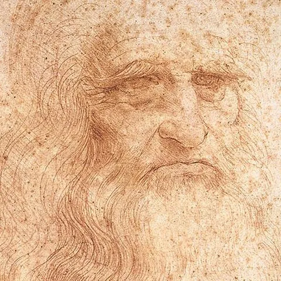
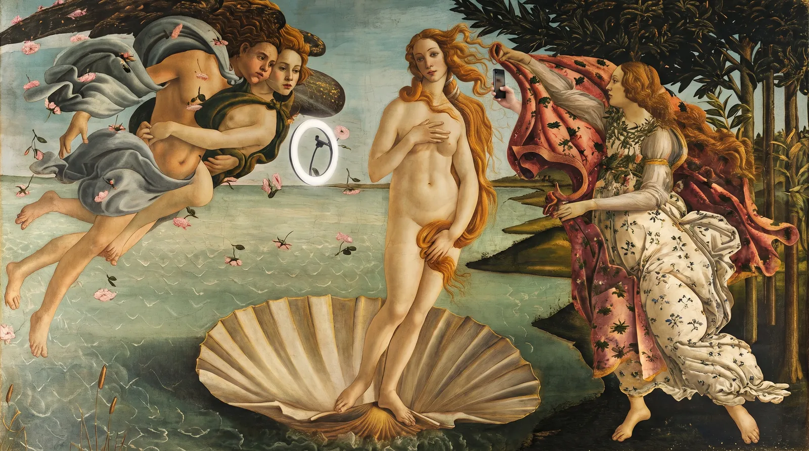
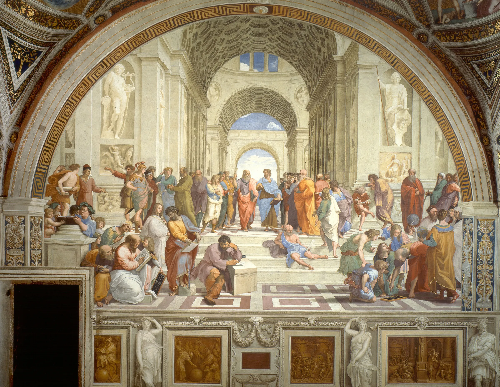

Leonardo di ser Piero da Vinci
Engenheiro militar · Inventor · (pinta também)
Florença → Milão
Aprendiz no ateliê de Verrocchio, Florença
Disponível para trabalhar: sim
Engenharia militar, arquitetura, escultura…

Wi-Fi
Pareamento concluído · Adão ⇄ Criador
Há mais de 500 anos esses dois dedos quase se tocam. Hoje, por um instante, deu sinal.
Próximas paradas: Florença, Milão e Roma, por volta de 1500. Nenhum sinal de celular. E, mesmo assim, tudo viralizou.
A Criação de AdãoMichelangeloc. 1508–1512Capela Sistina, Vaticano
Cena 02 · Florença, c. 1470
Florença, fim do século XV. Nenhum Wi-Fi, nenhum celular. E a maior concentração de gênios por metro quadrado da história.
Lorenzo de' Medici
patrocinador oficial · 1449–1492
Antes do post patrocinado, existia o mecenas. Os Medici eram banqueiros e patronos das artes, e o dinheiro deles virava pintura, escultura e arquitetura.
Lorenzo de' Medici, o Magnífico (1449–1492), apoiou Botticelli e acolheu o jovem Michelangelo no palácio da família. Curadoria de talentos antes de existir algoritmo.
Leonardo foi aprendiz no ateliê de Verrocchio, aqui mesmo em Florença. Tutorial, só ao vivo e ao lado do mestre.

Ilustração em forma de aplicativo de mapa: a busca “ateliê perto de mim” mostra o Ateliê de Verrocchio, onde Leonardo foi aprendiz, e o Ateliê de Botticelli, apoiado pelos Medici. Os pins marcam o Duomo, o Palazzo Vecchio, a Ponte Vecchio e o rio Arno; o ponto “você está aqui” fica sobre o desenhista que desenhou a vista.
Cena 03 · Florença → Milão, c. 1482
Por volta de 1482, Leonardo escreveu a Ludovico Sforza, que governava Milão, oferecendo seus serviços. O rascunho sobreviveu no Codex Atlanticus.
Ele tinha uns 30 anos e uma lista de habilidades. Quase todas de guerra.

Engenheiro militar · Inventor · (pinta também)
Florença → Milão
Aprendiz no ateliê de Verrocchio, Florença
Disponível para trabalhar: sim
Engenharia militar, arquitetura, escultura…
Fonte: carta a Ludovico Sforza, senhor de Milão · c. 1482
…e também pintura.
Tão bem quanto qualquer outro.
Resumo da carta, na ordem aproximada. O rascunho está no Codex Atlanticus (Biblioteca Ambrosiana, Milão).
Resultado
Leonardo se mudou para Milão por volta de 1482 e ficou lá até 1499. Projetou, inventou e cuidou até das festas da corte.
Mas a obra mais famosa dessa temporada não foi ponte nem canhão. Foi uma pintura: a Última Ceia (1495–1498).
Os cadernos
Canhoto, Leonardo escrevia espelhado, da direita para a esquerda. Para ler, só com um espelho. Ou com este botão.Ou é só rolar a tela.
Ou passe o mouse sobre a página. Ou toque na página.


Protótipos
protótipo · status: em beta há 500 anos
Leonardo desenhou máquinas de voar uns 400 anos antes do primeiro avião.
Medição
altura ÷ envergadura 1.0000
A IA mediu e confirmou: de braços abertos, a envergadura é igual à altura. Vitrúvio escreveu essa regra no século I a.C.; Leonardo desenhou c. 1490.

Cena 04 · Botticelli, c. 1484–1486
Zéfiro, o vento oeste, sopra Vênus até a praia. A Hora da Primavera já espera com o manto. A lenda diz que a modelo foi Simonetta Vespucci.


Versão 2026 gerada com IA a partir da obra

@venus
Uffizi, Florença
venus cheguei. sem filtro, só têmpera 🐚
zefiro soprei forte demais?
hora.da.primavera amiga, veste isso aqui
sandro.botticelli crédito da foto?
simonetta.vespucci a lenda diz que sou eu
michelangelo está digitando…
O Nascimento de VênusSandro Botticellic. 1484–1486Têmpera sobre telaGalleria degli Uffizi, FlorençaVersão 2026 gerada com IA a partir da obra
Cena 05 · Florença, 1503
Florença, 1503. Segundo Vasari, um comerciante encomendou a Leonardo o retrato da esposa. Parecia um pedido simples.

Mona LisaLeonardo da Vincic. 1503–1519Museu do Louvre, Paris
A versão 2026, com fones sem fio e café gelado, foi gerada com IA a partir da obra.
Em 2005, pesquisadores da Universidade de Amsterdã e da Universidade de Illinois passaram o rosto dela num software de reconhecimento de emoções. O sorriso mais discutido da arte, enfim, em números.
01 · Face ID
rosto encontrado · sobrancelhas: 0
Veredito: feliz. Com ressalvas.
O cliente era Francesco del Giocondo, comerciante de seda florentino. Leonardo nunca entregou: levou o quadro para a França e seguiu retocando até perto da morte, em 1519.
02 · Encomenda
Francesco del Giocondocliente · Florença
Retoques99%
Entreganunca
Em 21 de agosto de 1911, ela sumiu do Louvre. O ladrão, Vincenzo Peruggia, trabalhava no museu. O sumiço a transformou na pintura mais famosa do mundo.
03 · 1911
Em alta em Paris
Dezembro de 1913 · encontrada em Florença
Cinco séculos depois, ela segue no Louvre, sem prazo de entrega. E se o retrato fosse encomendado hoje?
Mona Lisa 2026
Novidades: fones sem fio e café gelado.
Cena 06 · Capela Sistina, Vaticano, 1509
Pintando o teto da Capela Sistina, Michelangelo mandou ao amigo Giovanni da Pistoia um soneto reclamando do trabalho. E se desenhou na margem.
Detalhe: ele se considerava escultor, não pintor. O teto levou quatro anos, de 1508 a 1512.

Michelangelo Buonarroti escultor
@buonarroti · Capela Sistina, Vaticano · 1509
para Giovanni da Pistoia
I' ho già fatto un gozzo in questo stento
La barba al cielo
e 'l pennel sopra 'l viso tuttavia
mel fa, gocciando, un ricco pavimento
non sendo in loco bon, né io pittore
Já me cresceu um papo nesse sufoco
A barba apontando pro céu
e o pincel, sempre em cima da minha cara,
pingando, faz dela um piso todo colorido
não estou em bom lugar, e nem pintor eu sou
Traduzido do italiano ·
1509 · enviado do andaime
giovanni.dapistoia força, amigo. Faltam só uns três anos.
papa.julio.ii e o teto, sai quando?
Repare na margem: ele pinta de pé, com a cabeça jogada para trás. Pintar deitado de costas é lenda.
Cena 07 · Vaticano, Roma, 1511
Rafael juntou numa parede do Vaticano pensadores que viveram com séculos de diferença. Pé-direito alto, muita conversa, ninguém no mesmo fuso.
A Escola de AtenasRafael1509–1511Stanza della Segnatura, Vaticano

Pitágoras
fazendo a ata
Escreve sem parar num livro, enquanto um aluno segura a lousa para ele.
Sócrates
a reunião que podia ser um e-mail
Conta os argumentos nos dedos. Não deixou nada escrito: o que se sabe dele veio dos alunos.
Heráclito
modo foco
Sozinho, apoiado num bloco, escrevendo. Acredita-se que seja um retrato de Michelangelo, acrescentado depois. Sim, o do desabafo.
Platão
já usava a nuvem
Aponta para o alto, onde moram as ideias. Acredita-se que o rosto seja o de Leonardo da Vinci. Sim, o do currículo.
Aristóteles
prefere servidor local
A mão espalmada aponta para baixo: para o mundo que dá para observar daqui.
Diógenes
status: ausente
Largado na escada, ignorando todo mundo. Diz a tradição que morava num jarro.
Euclides
desenhando o wireframe
Compasso na lousa, alunos em volta. Acredita-se que tenha o rosto de Bramante, o arquiteto.
Ptolomeu e Zoroastro
o primeiro Google Earth
Ptolomeu, de costas, segura o globo da Terra. Zoroastro, de frente, segura o céu estrelado.
Rafael
olhando para a câmera: o primeiro selfie
Na borda direita, de boina escura, olhando para fora do quadro. É o autorretrato do próprio pintor.
Cena 08 · Fim do sinal
com carinho, a Renascença
Sem feed, sem curtidas, sem Wi-Fi. E faz cinco séculos que ninguém consegue parar de olhar.